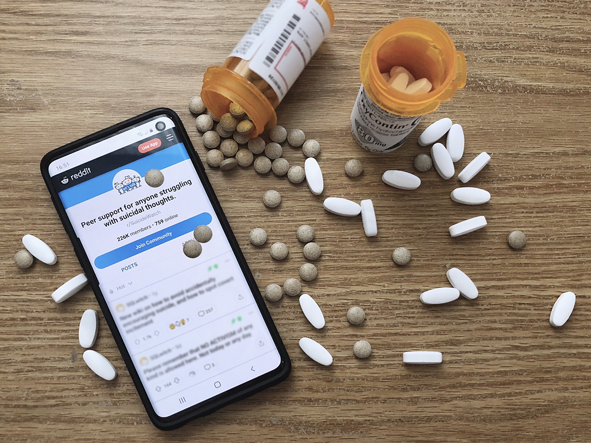

Advantage of social media over traditional surveys is the immediate accessibility of data. Analyzing opioid-related
social media posts has the potential to reveal patterns of opioid abuse at a national scale, and understand opinions
of the public and opioid users. We have performed various analysis on social media, including spatial-temporal trends of opioid use,
content analysis, types of users and their background, and suicide intention.

References:
-
Hannah Yao, Sina Rashidian, Xinyu Dong, Hongyi Duanmu, Richard Rosenthal and Fusheng Wang:
Detection of Suicidality Among Opioid Users on Reddit: Machine Learning–Based Approach.
Journal of Medical Internet Research. Vol 22, No 11 (2020): November.
-
Sheetal Mangesh Pandrekar, Xin Chen and Fusheng Wang:
Social Media Based Analysis of Opioid Epidemic Using Reddit.
In Proceedings of AMIA 2018 Annual Symposium. San Francisco, November 3-7, 2018.
-
Sheetal Mangesh Pandrekar, Manish Valakonda, Xin Chen and Fusheng Wang:
Towards Spatial Analysis of Opioid Abuse Using Twitter. In AMIA Annual Symposium, November 4-8, 2017, Wasington DC, USA.